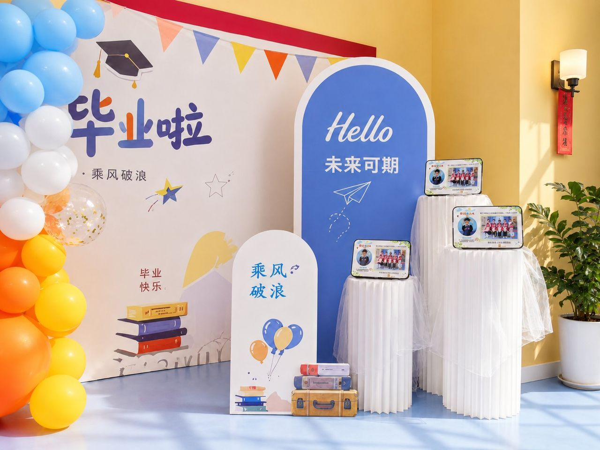

班级同伴结构与社交多样性
家长可了解班级年龄跨度、男女比例和同伴互动氛围，但不应机械追求某个固定比例；尊重每个孩子并营造包容的交往环境更重要。
报名前核对
下面这份清单可以带着去到校沟通，避免重要信息只停留在口头介绍。
询问课程年龄、班型、实际上课人数、教师配置、课堂安排、孩子表现反馈方式。
核验适用的办学许可、备案和从业资质，了解教师是否稳定、教学内容与资质是否匹配。
了解出入校管理、卫生消毒、午休和餐食、意外应急、学生影像使用及课堂监控管理规则。
索取课程费用、课时、请假补课、调班、退费规则和合同样本，仔细核对书面条款。
询问如何照顾慢热、焦虑、注意力易分散或社交适应较慢的孩子，是否及时向家长反馈。
了解是否有定期开放日、课堂观察渠道、阶段性成长档案，以及清晰而具体的学习目标。
到校参观
下方照片来自校区日常与活动布置。参观时可以对照上方清单，逐项向老师询问与观察。



校区课程资料
托马斯学习馆王家湾人信汇校区提供的课程、师资分工和日常配套说明。
面向5—6岁、中大班阶段，介绍托马斯人信汇校区约10人班、分科配师、习惯培养、游戏化启蒙与全年班作息。
阅读全文 →少儿英语托马斯学习馆王家湾人信汇校区英语课程资料：POWER UP与瑞格自然拼读、平均8—10人班、情景互动、分级输入和能力反馈。
阅读全文 →校区生活校区提供的独立食堂、全职厨师与配菜人员、餐具消毒柜、每周食谱、独立睡房一人一床及户外活动安排资料。
阅读全文 →招生咨询
适合的课程因孩子年龄、基础与班级安排而异。可联系老师了解当期教学安排、收费及开放参观时间。
武汉市汉阳区龙兴西街人信汇F地块二期7幢1—2层6商号（人信汇二期一号门旁）